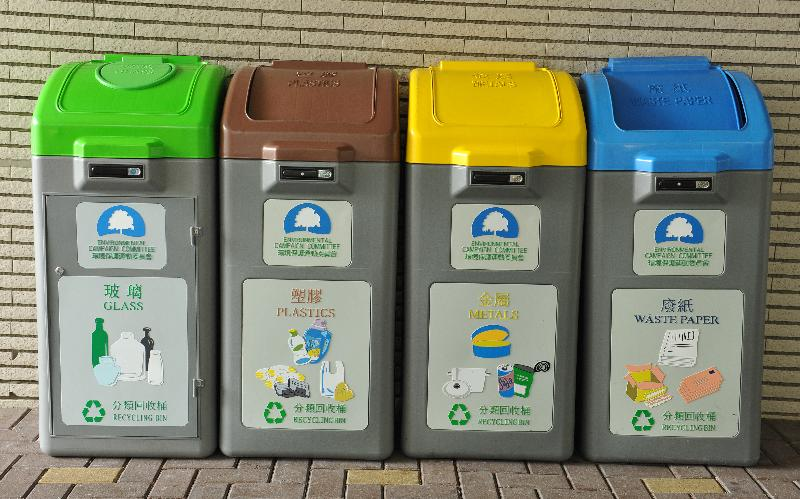

<div id="header">
    <h1>Find your nearest Recycling Bin</h1>
  </div>
  
  <div id="img">
    
  </div>
  
  <div id="button">
    <button class='btn btn-danger' [disabled]="!(lat && lng)" (click)="getBin()">Nearest Recycling Bin</button>
  </div>
  
  <div id="table" *ngIf="bins">
    <table class="table table-striped">
      <thead>
        <tr>
          <th scope="col">District</th>
          <th scope="col">Place</th>
          <th scope="col">Waste Type</th>
          <th scope="col">Distance (km)</th>
          <th scope="col">Direction</th>
          <th scope="col">Street View</th>
          <th scope="col">Favorite</th>
        </tr>
      </thead>
      <tbody>
        <tr *ngFor="let bin of bins">
          <th scope="row">{{bin.district}}</th>
          <td>{{bin.location}}</td>
          <td>{{bin.wasteType}}</td>
          <td>{{bin.distance}}</td>
          <td><button class="btn btn-info" (click)="loc(bin)">Let's Go</button></td>
          <td><button class="btn btn-info" (click)="view(bin)">Check</button></td>
          <td><button class='star' (click)="favorite(bin)"><i class="fa fa-2x fa-star" aria-hidden="true"></i></button></td>
        </tr>
      </tbody>
    </table>
  
  </div>
  
  
  <div class='a'>
    <a (click)='logout()' routerLink="/home" class='btn btn-warning'>Log Out</a>
  </div>
  